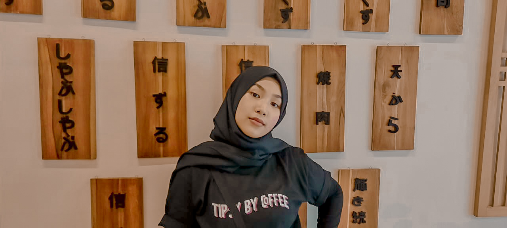

<!DOCTYPE html>
<html>
<head>
	<link rel="stylesheet" type="text/css" href="LatihanCSS.css">
</head>
<body>

</body>
</html>
<h1><p style="text-align: center">Pengalaman PJJ selama Pandemi COVID-19</p></h1>
<h2><p>Biodata Penulis</p>

<table style="width: 100%">
<p>
<table border="2">
	<tr>
		<th>Nama</th>
		<th>Bunga Kasih Camilla</th>
	</tr>
	<tr>
		<th>Usia</th>
		<th>17 tahun</th>
	</tr>
	<tr>
		<th>Kelas</th>
		<th>11</th>
	</tr>
	<tr>
		<th>Sekolah</th>
		<th>SMK-SMAK Bogor</th>
	</tr>
	<tr>
		<th>Zodiak</th>
		<th>Capricorn</th>
	</tr>
	<tr>
		<th>Hobi</th>
		<th>Day Dreaming</th>
	</tr>
	<tr>
		<th>Cita-Cita</th>
		<th>Menjelajahi Dunia</th>
	</tr>
</p>
/<h2>
</table>

<h3><p style="text-align: justify">Apa Itu COVID-19?</p></h3>
<p>COVID-19 atau Corona Virus Disease 2019 adalah sebuah penyakit jenis baru yang disebabkan oleh virus SARS-C0V2 yang termasuk ke dalam golongan dari coronavirus. Virus ini ditemukan pertama kali pada akhir Desember tahun 2019 di kota Wuhan, Cina. Virus ini pertama kali menyebar melalui kelelawar yang diperjual-belikan di sebuah pasar di kota Wuhan, dan dengan cepat menyebar ke seluruh dunia dalam beberapa bulan, termasuk juga Indonesia. Sejak ditemukan kasus positif pertama yang menimpa dua orang warga Depok, mulai dari 16 Maret 2020, sistem social distancing diberlakukan di seluruh tempat. </p>

<h3><p style="text-align: justify">Pengalaman Pembelajaran Jarak Jauh selama Pandemi</p></h3>
<p>Dikarenakan pandemi yang tidak kunjung membaik, semua pembelajaran sekolah dilakukan secara daring atau online. Pada awalnya saya sedikit antusias dengan pembelajaran daring karena saya berharap dengan diberlakukan pembelajaran sistem daring, saya akan mendapatkan waktu luang lebih dan jadwal yang lebih fleksibel dari sebelumnya. Tetapi, lama-kelamaan saya merasa bosan dengan pembelajaran yang terlalu datar karena kurangnya interaksi antara siswa dengan guru. Sistem ini juga memaksa saya untuk terus melihat layar gadget dalam waktu yang lama sehingga mata saya jadi cepat lelah. </p>

<p>Sejak sistem daring ini, saya juga merasa semua guru terlalu membebani murid dengan terlalu banyak tugas dengan alasan "Waktu luang di rumah lebih banyak", sedangkan pada kenyataannya semua murid tidak memiliki waktu luang sedikitpun karena memiliki tugas tambahan di luar tugas sekolah (Seperti tugas-tugas rumah yang diberikan oleh orang tua). Selama PJJ juga saya merasa sulit untuk mencerna materi yang disampaikan karena rata-rata guru hanya memberikan materi dalam bentuk video dan PPT. Interaksi antara guru dan murid juga sangat sedikit yang menyebabkan sulitnya komunikasi yang menghambat proses pembelajaran. </p>

<p>Dari semua pengalaman saya selama PJJ, saya menyimpulkan bahwa secanggih apapun teknologi yang digunakan untuk menopang pembelajaran daring, tetap lebih efektif dan efisien pembelajaran secara luring karena pentingnya interaksi antara guru dan murid yang dapat memperlancar proses belajar mengajar. Saya berharap penuh agar pandemi ini cepat membaik sehingga saya dapat beraktivitas normal kembali dan dapat melakukan pembelajaran secara normal kembali.</p>
</body>
</head>
<body>

</body>
</html>